에너지관리기사 (2022-03-05 기출문제)
1과목: 연소공학
1. 보일러 등의 연소장치에서 질소산화물(NOX)의 생성을 억제할 수 있는 연소 방법이 아닌 것은?
- 2단 연소
- 저산소(저공기비) 연소
- 배기의 재순환 연소
- 연소용 공기의 고온 예열
(정답률: 67%)

2. 다음 중 연료 연소 시 최대탄산가스농도(CO2 max) 가 가장 높은 것은?
- 탄소
- 연료유
- 역청탄
- 코크스로가스
(정답률: 72%)
3. 체적비로 메탄이 15%, 수소가 30%, 일산화탄소가 55%인 혼합기체가 있다. 각각의 폭발 상한계가 다음 표와 같을 때, 이 기체의 공기 중에서 폭발 상한계는 약 몇 vol% 인가?
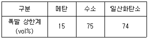
- 46.7
- 45.1
- 44.3
- 42.5
(정답률: 45%)
4. 어떤 고체연료를 분석하니 중량비로 수소 10%, 탄소 80%, 회분 10% 이었다. 이 연료 100kg을 완전연소시키기 위하여 필요한 이론공기량은 약 몇 Nm3 인가?
- 206
- 412
- 490
- 978
(정답률: 38%)
5. 점화에 대한 설명으로 틀린 것은?
- 연료가스의 유출속도가 너무 느리면 실화가 발생한다.
- 연소실의 온도가 낮으면 연료의 확산이 불량해진다.
- 연료의 예열온도가 낮으면 무화불량이 발생한다.
- 점화시간이 늦으면 연소실 내로 역화가 발생한다.
(정답률: 42%)
6. 고체연료의 일반적인 특징에 대한 설명으로 틀린 것은?
- 회분이 많고 발열량이 적다.
- 연소효율이 낮고 고온을 얻기 어렵다.
- 점화 및 소화가 곤란하고 온도조절이 어렵다.
- 완전연소가 가능하고 연료의 품질이 균일하다.
(정답률: 65%)
7. 등유, 경유 등의 휘발성이 큰 연료를 접시모양의 용기에 넣어 증발 연소시키는 방식은?
- 분해 연소
- 확산 연소
- 분무 연소
- 포트식 연소
(정답률: 56%)
8. 액체 연소장치 중 회전식 버너의 일반적인 특징으로 옳은 것은?
- 분사각은 20~50° 정도이다.
- 유량조절범위는 1:3 정도이다.
- 사용 유압은 30~50kPa 정도이다.
- 화염이 길어 연소가 불안정하다.
(정답률: 46%)
9. CmHn 1 Nm3를 공기비 1.2로 연소시킬 때 필요한 실제 공기량은 약 몇 Nm3 인가?
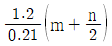
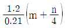
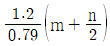
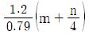
(정답률: 46%)
10. 메탄올(CH3OH) 1kg을 완전연소 하는데 필요한 이론공기량은 약 몇 Nm3인가?
- 4.0
- 4.5
- 5.0
- 5.5
(정답률: 44%)
11. 중량비가 C:87%, H:11%, S:2%인 중유를 공기비 1.3으로 연소할 때 건조배출가스 중 CO2의 부피비는 약 몇 % 인가?
- 8.7
- 10.5
- 12.2
- 15.6
(정답률: 23%)
12. 액체의 인화점에 영향을 미치는 요인으로 가장 거리가 먼 것은?
- 온도
- 압력
- 발화지연시간
- 용액의 농도
(정답률: 59%)
13. 고위발열량이 37.7MJ/kg인 연료 3kg이 연소할 때의 저위발열량은 몇 MJ인가? (단, 이 연료의 중량비는 수소 15%, 수분 1% 이다.)
- 52
- 103
- 184
- 217
(정답률: 39%)
14. 다음 중 고속운전에 적합하고 구조가 간단하며 풍량이 많아 배기 및 환기용으로 적합한 송풍기는?
- 다익형 송풍기
- 플레이트형 송풍기
- 터보형 송풍기
- 축류형 송풍기
(정답률: 44%)
15. 통풍방식 중 평형통풍에 대한 설명으로 틀린 것은?
- 통풍력이 커서 소음이 심하다.
- 안정한 연소를 유지할 수 있다.
- 노내 정압을 임의로 조절할 수 있다.
- 중형 이상의 보일러에는 사용할 수 없다.
(정답률: 62%)
16. 저위발열량 7470kJ/kg의 석탄을 연소시켜 13200 kg/h의 증기를 발생시키는 보일러의 효율은 약 몇 % 인가? (단, 석탄의 공급은 6040 kg/h이고, 증기의 엔탈피는 3107 kJ/kg, 급수의 엔탈피는 96kJ/kg 이다.)
- 64
- 74
- 88
- 94
(정답률: 39%)
17. 불꽃연소(flaming combustion)에 대한 설명으로 틀린 것은?
- 연소속도가 느리다.
- 연쇄반응을 수반한다.
- 연소사면체에 의한 연소이다.
- 가솔린의 연소가 이에 해당한다.
(정답률: 60%)
18. 폭굉 유도거리(DID)가 짧아지는 조건으로 틀린 것은?
- 관지름이 크다.
- 공급압력이 높다.
- 관 속에 방해물이 있다.
- 연소속도가 큰 혼합가스이다.
(정답률: 52%)
19. 버너에서 발생하는 역화의 방지대책과 거리가 먼 것은?
- 버너 온도를 높게 유지한다.
- 리프트 한계가 큰 버너를 사용한다.
- 다공 버너의 경우 각각의 연료분출구를 작게 한다.
- 연소용 공기를 분할 공급하여 1차공기를 착화범위보다 적게 한다.
(정답률: 54%)
20. 다음 기체 연료 중 단위질량당 고위발열량이 가장 큰 것은?
- 메탄
- 수소
- 에탄
- 프로판
(정답률: 61%)
2과목: 열역학
21. 순수물질로 된 밀폐계가 가역단열 과정 동안 수행한 일의 양과 같은 것은? (단, U는 내부에너지, H는 엔탈피, Q는 열량이다.)
- -△H
- -△U
- 0
- Q
(정답률: 39%)
22. 물체의 온도 변화 없이 상(phase, 相) 변화를 일으키는데 필요한 열량은?
- 비열
- 점화열
- 잠열
- 반응열
(정답률: 53%)
23. 다음 중 포화액과 포화증기의 비엔트로피 변화에 대한 설명으로 옳은 것은?
- 온도가 올라가면 포화액의 비엔트로피는 감소하고 포화증기의 비엔트로피는 증가한다.
- 온도가 올라가면 포화액의 비엔트로피는 증가하고 포화증기의 베엔트로피는 감소한다.
- 온도가 올라가면 포화액과 포화증기의 비엔트로피는 감소한다.
- 온도가 올라가면 포화액과 포화증기의 비엔트로피는 증가한다.
(정답률: 41%)
24. 다음 중 과열증기(superheated steam)의 상태가 아닌 것은?
- 주어진 압력에서 포화증기 온도보다 높은 온도
- 주어진 비체적에서 포화증기 압력보다 높은 압력
- 주어진 온도에서 포화증기 비체적보다 낮은 비체적
- 주어진 온도에서 포화증기 엔탈피보다 낮은 엔탈피
(정답률: 39%)
25. 400K, 1MPa 의 이상기체 1 kmol이 700K, 1MPa으로 정압팽창할 때 엔트로피 변화는 약 몇 kJ/K 인가? (단, 정압비열은 28 kJ/kmol·K 이다.)
- 15.7
- 19.4
- 24.3
- 39.4
(정답률: 26%)
26. 체적이 일정한 용기에 400kPa 의 공기 1kg이 들어있다. 용기에 달린 밸브를 열고 압력이 300kPa이 될 때까지 대기 속으로 공기를 방출하였다. 용기 내의 공기가 가역단열 변화라면 용기에 남아있는 공기의 질량은 약 몇 kg 인가? (단, 공기의 비열비는 1.4 이다.)
- 0.614
- 0.714
- 0.814
- 0.914
(정답률: 20%)
27. 다음 중 이상기체에 대한 식으로 옳은 것은? (단, 각 기호에 대한 설명은 아래와 같다.)
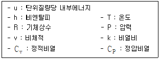
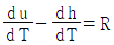
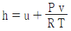
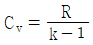
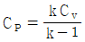
(정답률: 39%)
28. 밀폐된 피스톤-실린더 장치 안에 들어 있는 기체가 팽창을 하면서 일을 한다. 압력 P[MPa]와 부피 V[L]의 관계가 아래와 같을 때, 내부에 있는 기체의 부피가 5L에서 두배로 팽창하는 경우 이 장치가 외부에 한 일은 약 몇 kJ 인가? (단, a = 3 MPa/L2,b = 2 MPa/L, c = 1 MPa)
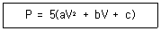
- 4175
- 4375
- 4575
- 4775
(정답률: 22%)
29. 다음 중 열역학 제2법칙에 대한 설명으로 틀린 것은?
- 에너지 보존에 대한 법칙이다.
- 제2종 영구기관은 존재할 수 없다.
- 고립계에서 엔트로피는 감소하지 않는다.
- 열은 외부 동력 없이 저온체에서 고온체로 이동할 수 없다.
(정답률: 49%)
30. 이상기체의 단위 질량당 내부에너지 u, 비엔탈피 h, 비엔트로피 s에 관한 다음의 관계식 중에서 모두 옳은 것은? (단, T는 온도, p는 압력, v는 비체적을 나타낸다.)
- Tds = du – vdp, Tds = dh - pdv
- Tds = du + pdv, Tds = dh - vdp
- Tds = du – vdp, Tds = dh + pdv
- Tds = du + pdv, Tds = dh + vdp
(정답률: 49%)
31. 폴리트로픽 과정에서의 지수(polytripic index)가 비열비와 같을 때의 변화는?
- 정적변화
- 가역단열변화
- 등온변화
- 등압변화
(정답률: 39%)
32. 체적 0.4m3인 단단한 용기 안에 100℃의 물 2kg이 들어있다. 이 물의 건도는 얼마인가? (단, 100℃의 물에 대해 포화수 비체적 vf=0.00104 m3/kg, 건포화증기 비체적 vg=1.672 m3/kg 이다.)
- 11.9%
- 10.4%
- 9.9%
- 8.4%
(정답률: 25%)
33. 그림과 같은 브레이튼 사이클에서 열효율(η)은? (단, P는 압력, v는 비체적이며, T1, T2, T3, T4는 각각의 지점에서의 온도이다. 또한, qin과 qout은 사이클에서 열이 들어오고 나감을 의미한다.)
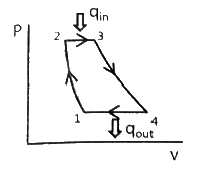
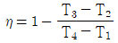
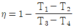
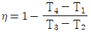
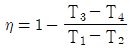
(정답률: 44%)
34. 역카르노 사이클로 작동하는 냉동사이클이 있다. 저온부가 –10℃, 고온부가 40℃로 유지되는 상태를 A상태라고 하고, 저온부가 0℃, 고온부가 50℃로 유지되는 상태를 B상태라 할 때, 성능계수는 어느 상태의 냉동사이클이 얼마나 더 높은가?
- A상태의 사이클이 0.8만큼 더 높다.
- A상태의 사이클이 0.2만큼 더 높다.
- B상태의 사이클이 0.8만큼 더 높다.
- B상태의 사이클이 0.2만큼 더 높다.
(정답률: 44%)
35. 가솔린 기관의 이상 표준사이클인 오토 사이클(Otto cycle)에 대한 설명 중 옳은 것을 모두 고른 것은?
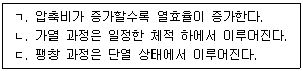
- ㄱ, ㄴ
- ㄱ, ㄷ
- ㄴ, ㄷ
- ㄱ, ㄴ, ㄷ
(정답률: 43%)
36. 다음과 같은 특징이 있는 냉매의 특징은?
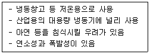
- R-12
- R-22
- R-134a
- NH3
(정답률: 44%)
37. 압축기에서 냉매의 단위 질량당 압축하는데 요구되는 에너지가 200 kJ/kg 일 때, 냉동기에서 냉동능력 1kW당 냉매의 순환량은 약 몇 kg/h 인가? (단, 냉동기의 성능계수는 5.0 이다.)
- 1.8
- 3.6
- 5.0
- 20.0
(정답률: 31%)
38. 40m3의 실내에 있는 공기의 질량은 약 몇 kg 인가? (단, 공기의 압력은 100kPa, 온도는 27℃ 이며, 공기의 기체상수는 0.287 kJ/kg·K 이다.)
- 93
- 46
- 10
- 2
(정답률: 35%)
39. 동일한 최고 온도, 최저 온도 사이에 작동하는 사이클 중 최대의 효율을 나타내는 사이클은?
- 오토 사이클
- 디젤 사이클
- 카르노 사이클
- 브레이튼 사이클
(정답률: 52%)
40. 랭킨(Rankine) 사이클에서 응축기의 압력을 낮출 때 나타나는 현상으로 옳은 것은?
- 이론 열효율이 낮아진다.
- 터빈 출구의 증기건도가 낮아진다.
- 응축기의 포화온도가 높아진다.
- 응축기내의 절대압력이 증가한다.
(정답률: 42%)
3과목: 계측방법
41. 다음 가스 분석법 중 흡수식인 것은?
- 오르자트법
- 밀도법
- 자기법
- 음향법
(정답률: 51%)
42. 상온, 1기압에서 공기유속을 피토관으로 측정할 때 동압이 100mmAq 이면 유속은 약 몇 m/s 인가? (단, 공기의 밀도는 1.3 kg/m3 이다.)
- 3.2
- 12.3
- 38.8
- 50.5
(정답률: 26%)
43. 유량 측정에 쓰이는 탭(tap)방식이 아닌 것은?
- 베나 탭
- 코너 탭
- 압력 탭
- 플랜지 탭
(정답률: 43%)
44. 보일러의 자동제어에서 제어장치의 명칭과 제어량의 연결이 잘못된 것은?
- 자동연소 제어장치 - 증기압력
- 자동급수 제어장치 - 보일러수위
- 과열증기온도 제어장치 - 증기온도
- 캐스케이드 제어장치 – 노내압력
(정답률: 33%)
45. 측정하고자 하는 상태량과 독립적 크기를 조정할 수 있는 기준량과 비교하여 측정, 계측하는 방법은?
- 보상법
- 편위법
- 치환법
- 영위법
(정답률: 38%)
46. 다음 비례-적분동작에 대한 설명에서 ( ) 안에 들어갈 알맞은 용어는?
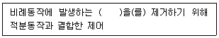
- 오프셋
- 빠른 응답
- 지연
- 외란
(정답률: 51%)
47. 안지름 1000mm의 원통형 물탱크에서 안지름 150mm인 파이프로 물을 수송할 때 파이프의 평균 유속이 3m/s 이었다. 이 때 유량(Q)과 물탱크 속의 수면이 내려가는 속도(V)는 약 얼마인가?
- Q = 0.⑤3 m3/s, V = 6.75 cm/s
- Q = 0.831 m3/s, V = 6.75 cm/s
- Q = 0.⑤3 m3/s, V = 8.31 cm/s
- Q = 0.831 m3/s, V = 8.31 cm/s
(정답률: 22%)
48. 램 실린더, 기름탱크, 가압펌프 등으로 구성되어 있으며 탄성식 압력계의 일반교정용으로 주로 사용되는 압력계는?
- 분동식 압력계
- 격막식 압력계
- 침종식 압력계
- 벨로스식 압력계
(정답률: 51%)
49. 다음 측정관련 용어에 대한 설명으로 틀린 것은?
- 측정량 : 측정하고자 하는 양
- 값 : 양의 크기를 함께 표현하는 수와 기준
- 제어편차 : 목표치에 제어량을 더한 값
- 양 : 수와 기준으로 표시할 수 있는 크기를 갖는 현상이나 물체 또는 물질의 성질
(정답률: 43%)
50. 부자식(float) 면적 유량계에 대한 설명으로 틀린 것은?
- 압력손실이 적다.
- 정밀측정에는 부적합하다.
- 대유량의 측정에 적합하다.
- 수직배관에만 적용이 가능하다.
(정답률: 23%)
51. 액주식 압력계에 필요한 액체의 조건으로 틀린 것은?
- 점성이 클 것
- 열팽창계수가 작을 것
- 성분이 일정할 것
- 모세관현상이 작을 것
(정답률: 43%)
52. 서미스터의 재질로서 적합하지 않은 것은?
- Ni
- Co
- Mn
- Pb
(정답률: 42%)
53. 저항식 습도계의 특징으로 틀린 것은?
- 저온도의 측정이 가능하다.
- 응답이 늦고 정밀도가 좋지 않다.
- 연속기록, 원격측정, 자동제어에 이용된다.
- 교류전압에 의하여 저항치를 측정하여 상대습도를 표시한다.
(정답률: 45%)
54. 가스미터의 표준기로도 이용되는 가스미터의 형식은?
- 오벌형
- 드럼형
- 다이어프램형
- 로터리 피스톤형
(정답률: 28%)
55. 물체의 온도를 측정하는 방소고온계에서 이용하는 원리는?
- 제백 효과
- 필터 효과
- 원-프랑크의 법칙
- 스테판-볼츠만의 법칙
(정답률: 45%)
56. 자동제어의 특성에 대한 설명으로 틀린 것은?
- 작업능률이 향상된다.
- 작업에 따른 위험 부담이 감소된다.
- 인건비는 증가하나 시간이 절약된다.
- 원료나 연료를 경제적으로 운영할 수 있다.
(정답률: 49%)
57. 1000℃ 이상인 고온인 노 내 온도측정을 위해 사용되는 온도계로 가장 적합하지 않은 것은?
- 제겔콘(seger cone) 온도계
- 백금저항온도계
- 방사온도계
- 광고온계
(정답률: 37%)
58. 내열성이 우수하고 산화분위기 중에서도 강하며, 가장 높은 온도까지 측정이 가능한 열전대의 종류는?
- 구리-콘스탄탄
- 철-콘스탄탄
- 크로멜-알루멜
- 백금-백금·로듐
(정답률: 52%)
59. 열전대 온도계에 대한 설명으로 틀린 것은?
- 보호관 선택 및 유지관리에 주의한다.
- 단자의 (+)와 보상도선의 (-)를 결선해야 한다.
- 주위의 고온체로부터 복사열의 영향으로 인한 오차가 생기지 않도록 주의해야 한다.
- 열전대는 측정하고자 하는 곳에 정확히 삽입하여 삽입한 구멍을 통하여 냉기가 들어가지 않게 한다.
(정답률: 46%)
60. 압력센서인 스트레인게이지의 응용원리로 옳은 것은?
- 온도의 변화
- 전압의 변화
- 저항의 변화
- 금속선의 굵기 변화
(정답률: 38%)
4과목: 열설비재료 및 관계법규
61. 다음 중 중성내화물에 속하는 것은?
- 납석질 내화물
- 고알루미나질 내화물
- 반규석질 내화물
- 샤모트질 내화물
(정답률: 44%)
62. 에너지이용 합리화법령상 검사대상기기에 대한 검사의 종류가 아닌 것은?
- 계속사용검사
- 개방검사
- 개조검사
- 설치장소 변경검사
(정답률: 44%)
63. 에너지이용 합리화법령상 규정된 특정열사용 기자재 품목이 아닌 것은?
- 축열식 전기보일러
- 태양열 집열기
- 철금속 가열로
- 용광로
(정답률: 41%)
64. 회전 가마(rotary kiln)에 대한 설명으로 틀린 것은?
- 일반적으로 시멘트, 석회석 등의 소성에 사용된다.
- 온도에 따라 소성대, 가소대, 예열대, 건조대 등으로 구분된다.
- 소성대에는 황산염이 함유된 클링커가 용융되어 내화벽돌을 침식시킨다.
- 시멘트 클링커의 제조방벙베 따라 건식법, 습식법, 반건식법으로 분류된다.
(정답률: 43%)
65. 에너지이용 합리화법령상 검사대상기기관리자를 해임한 경우 한국에너지공단 이사장에게 그 사유가 발생한 날부터 신고해야하는 기간은 며칠 이내인가? (단, 국방부장관이 관장하고 있는 검사대상기기관리자는 제외한다.)
- 7일
- 10일
- 20일
- 30일
(정답률: 44%)
66. 강관 이음 방법이 아닌 것은?
- 나사이음
- 용접이음
- 플랜지이음
- 플레어이음
(정답률: 46%)
67. 다이어프램 밸브(diaphragm valve)의 특징이 아닌 것은?
- 유체의 흐름이 주는 영향이 비교적 적다.
- 기밀을 유지하기 위한 패킹이 불필요하다.
- 주된 용도가 유체의 역류를 방지하기 위한 것이다.
- 산 등의 화학 약품을 차단하는데 사용하는 밸브이다.
(정답률: 44%)
68. 연속가마, 반연속가마, 불연속가마의 구분 방식은 어떤 것인가?
- 온도상승속도
- 사용목적
- 조업방식
- 전열방식
(정답률: 49%)
69. 다음 보온재 중 최고 안전 사용온도가 가장 낮은 것은?
- 유리섬유
- 규조토
- 우레탄 폼
- 펄라이트
(정답률: 49%)
70. 윤요(ring kiln)에 대한 일반적인 설명으로 옳은 것은?
- 종이 칸막이가 있다.
- 열효율이 나쁘다.
- 소성이 균일하다.
- 석회소성용으로 사용된다.
(정답률: 47%)
71. 에너지이용 합리화법령상 에너지절약전문기업의 사업이 아닌 것은?
- 에너지사용시설의 에너지절약을 위한 관리·용역사업
- 에너지절약형 시설투자에 관한 사업
- 신에너지 및 재생에너지원의 개발 및 보급사업
- 에너지절약 활동 및 성과에 대한 금융상·세제상의 지원
(정답률: 38%)
72. 에너지이용 합리화법령상 검사대상기기의 계속사용검사 유효기간 만료일이 9월 1일 이후인 경우 계쏙사용검사를 연기할 수 있는 기간 기준은 몇 개월 이내인가?
- 2개월
- 4개월
- 6개월
- 10개월
(정답률: 43%)
73. 에너지이용 합리화법에 따라 에너지이용 합리화에 관한 기본계획 사항에 포함되지 않는 것은?
- 에너지절약형 경제구조로의 전환
- 에너지이용 합리화를 위한 기술개발
- 열사용기자재의 안전관리
- 국가에너지정책목표를 달성하기 위하여 대통령령으로 정하는 사항
(정답률: 38%)
74. 에너지이용 합리화법령상 시공업단체에 대한 설명으로 틀린 것은?
- 시공업자는 산업통상자원부장관의 인가를 받아 시공업자단체를 설립할 수 있다.
- 시공업자단체는 개인으로 한다.
- 시공업자는 시공업자단체에 가입할 수 있다.
- 시공업자단체는 시공업에 관한 사업을 정부에 건의할 수 있다.
(정답률: 51%)
75. 에너지이용 합리화법령상 검사대상기기에 해당되지 않는 것은?
- 2종 관류보일러
- 정격용량이 1.2MW인 철금속가열로
- 도시가스 사용량이 300W인 소형온수보일러
- 최고사용압력이 0.3MPa, 내부 부피가 0.04m3인 2종 압력용기
(정답률: 29%)
76. 두께 230mm의 내화벽돌이 있다. 내면의 온도가 320℃이고 외면의 온도가 150℃일 때 이 벽면 10m2에서 손실되는 열량(W)은? (단, 내화벽돌의 열전도율은 0.96 W/m·℃ 이다.)
- 710
- 1632
- 7096
- 14391
(정답률: 29%)
77. 에너지법령상 에너지원별 에너지열량 환산기준으로 총발열량이 가장 낮은 연료는? (단, 1L 기준이다.)
- 윤활유
- 항공유
- B-C유
- 휘발유
(정답률: 42%)
78. 보온재의 구비조건으로 가장 거리가 먼 것은?
- 밀도가 작을 것
- 열전도율이 작을 것
- 재료가 부드러울 것
- 내열, 내약품성이 있을 것
(정답률: 45%)
79. 에너지이용 합리화법령상 연간 에너지사용량이 20만 티오이 이상인 에너지다소비사업자의 사업장이 받아야 하는 에너지진단주기는 몇 년인가? (단, 에너지진단은 전체진단이다.)
- 3
- 4
- 5
- 6
(정답률: 44%)
80. 감압밸브에 대한 설명으로 틀린 것은?
- 작동방식에는 직동식과 파일럿식이 있다.
- 증기용 감압밸브의 유입측에는 안전밸브를 설치하여야 한다.
- 감압밸브를 설치할 때는 직관부를 호칭경의 10배 이상으로 하는 것이 좋다.
- 감압밸브를 2단으로 설치할 경우에는 1단의 설정압력을 2단보다 높게 하는 것이 좋다.
(정답률: 40%)
5과목: 열설비설계
81. epm(equivalents per million)에 대한 설명으로 옳은 것은?
- 물 1L에 함유되어 있는 불순물의 양을 mg 으로 나타낸 것
- 물 1톤에 함유되어 있는 불순물의 양을 mg 으로 나타낸 것
- 물 1L 중에 용해되어 있는 물질을 mg 당량수로 나타낸 것
- 물 1 gallon 중에 함유된 grain의 양을 나타낸 것
(정답률: 39%)
82. 증기트랩장치에 관한 설명으로 옳은 것은?
- 증기관의 도중이나 상단에 설치하여 압력의 급상승 또는 급히 물이 들어가는 경우 다른 곳으로 빼내는 장치이다.
- 증기관의 도중이나 말단에 설치하여 증기의 일부가 응축되어 고여 있을 때 자동적으로 빼내는 장치이다.
- 보일러 동에 설치하여 드레인을 빼내는 장치이다.
- 증기관의 도중이나 말단에 설치하여 증기를 함유한 침전물을 분리시키는 장치이다.
(정답률: 41%)
83. 저온부식의 방지 방법이 아닌 것은?
- 과잉공기를 적게 하여 연소한다.
- 발열량이 높은 황분을 사용한다.
- 연료첨가제(수산화마그네슘)를 이용하여 노점온도를 낮춘다.
- 연소 배기가스의 온도가 너무 낮지 않게 한다.
(정답률: 41%)
84. 급수처리에서 양질의 급수를 얻을 수 있으나 비용이 많이 들어 보급수의 양이 적은 보일러 또는 선박보일러에서 해수로부터 정수(pure water)를 얻고자 할 때 주로 사용하는 급수처리 방법은?
- 증류법
- 여과법
- 석회소다법
- 이온교환법
(정답률: 45%)
85. 보일러 설치·시공기준상 대형보일러를 옥내에 설치할 때 보일러 동체 최상부에서 보일러실 상부에 있는 구조물까지의 거리는 얼마 이상이어야 하는가? (단, 주철제보일러는 제외한다.)
- 60cm
- 1m
- 1.2m
- 1.5m
(정답률: 34%)
86. 보일러에 설치된 과열기의 역할로 틀린 것은?
- 포화증기의 압력증가
- 마찰저항 감소 및 관내부식 방지
- 엔탈피 증가로 증기소비량 감소 효과
- 과열증기를 만들어 터빈의 효율 증대
(정답률: 25%)
87. 지름이 d(cm), 두께가 t(cm)인 얇은 두께의 밀폐된 원통 안에 압력 P(MPa)가 작용할 때 원통에 발생하는 원주방향의 인장응력(MPa)을 구하는 식은?
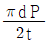
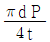
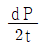
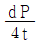
(정답률: 33%)
88. 일반적으로 리벳이음과 비교할 때 용접이음의 장점으로 옳은 것은?
- 이음효율이 좋다.
- 잔류응력이 발생되지 않는다.
- 진동에 대한 감쇠력이 높다.
- 응력집중에 대하여 민감하지 않다.
(정답률: 44%)
89. 보일러 설치검사기준에 대한 사항 중 틀린 것은?
- 5t/h 이하의 유류 보일러의 배기가스 온도는 정격 부하에서 상온과의 차가 300℃ 이하이어야 한다.
- 저수위안전장치는 사고를 방지하기 위해 먼저 연료를 차단한 후 경보를 울리게 해야 한다.
- 수입 보일러의 설치검사의 경우 수압시험은 필요하다.
- 수압시험 시 공기를 빼고 물을 채운 후 천천히 압력을 가하여 규정된 시험 수압에 도달된 후 30분이 경과된 뒤에 검사를 실시하여 검사가 끝날 때까지 그 상태를 유지한다.
(정답률: 43%)
90. 열사용기자재의 검사 및 검사면제에 관한 기준상 보일러 동체의 최소 두께로 틀린 것은?
- 안지름이 900mm 이하의 것 : 6mm(단, 스테이를 부착할 경우)
- 안지름이 900mm 초과 1350mm 이하의 것 : 8mm
- 안지름이 1350mm 초과 1850mm 이하의 것 : 10mm
- 안지름이 1850mm 초과하는 것 : 12mm
(정답률: 48%)
91. 노통보일러 중 원통형의 노통이 2개 설치된 보일러를 무엇이라고 하는가?
- 라몬트보일러
- 바브콕보일러
- 다우섬보일러
- 랭커셔보일러
(정답률: 47%)
92. 급수온도 20℃인 보일러에서 증기압력이 1MPa 이며 이 때 온도 300℃의 증기가 1 t/h씩 발생될 때 상당증발량은 약 몇 kg/h 인가? (단, 증기압력 1MPa에 대한 300℃의 증기엔탈피는 3⑤2 kJ/kg, 20℃에 대한 급수엔탈피는 83kJ/kg 이다.)
- 1315
- 1565
- 1895
- 2325
(정답률: 13%)
93. 전열면에 비등 기포가 생겨 열유속이 급격하게 증대하며, 가열면상에 서로 다른 기포의 발생이 나타나는 비등과정을 무엇이라고 하는가?
- 단상액체 자연대류
- 핵비등
- 천이비등
- 포밍
(정답률: 44%)
94. 고압 증기터빈에서 팽창되어 압력이 저하된 증기를 가열하는 보일러의 부속장치는?
- 재열기
- 과열기
- 절탄기
- 공기예열기
(정답률: 36%)
95. 보일러 슬러지 중에 염화마그네슘이 용존되어 있을 경우 180℃ 이상에서 강의 부식을 방지하기 위한 적정 pH는?
- 5.2±0.7
- 7.2±0.7
- 9.2±0.7
- 11.2±0.7
(정답률: 39%)
96. 다음 중 보일러 내처리에 사용하는 pH 조정제가 아닌 것은?
- 수산화나트륨
- 탄닌
- 암모니아
- 제3인산나트륨
(정답률: 37%)
97. 소용량주철제보일러에 대한 설명에서 ( ) 안에 들어갈 내용으로 옳은 것은?
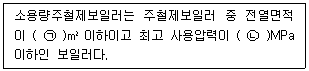
- ㉠ 4, ㉡ 0.1
- ㉠ 5, ㉡ 0.1
- ㉠ 4, ㉡ 0.5
- ㉠ 5, ㉡ 0.5
(정답률: 46%)
98. 외경 30mm, 벽두께 2mm 의 관 내측과 외측의 열전달계수는 모두 3000W/m2·K 이다. 관 내부온도가 외부보다 30℃ 만큼 높고, 관의 열전도율이 100 W/m·K 일 때 관의 단위길이당 열손실량은 약 몇 W/m 인가?
- 2979
- 3324
- 3824
- 4174
(정답률: 20%)
99. 다음 그림과 같은 V형 용접이음의 인장응력(σ)을 구하는 식은?
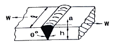
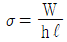
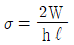
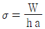
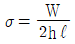
(정답률: 42%)
100. 대향류 열교환기에서 고온 유체의 온도는 TH1에서 TH2로, 저온 유체의 온도는 TC1에서 TC2로 열교환에 의해 변화된다. 열교환기의 대수평균온도차(LMTD)를 옳게 나타낸 것은?
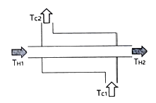
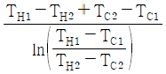
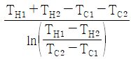
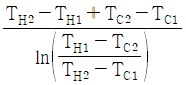
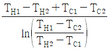
(정답률: 29%)
반면에 "2단 연소", "저산소(저공기비) 연소", "배기의 재순환 연소"는 각각 연소 온도를 낮추거나 산소 공급량을 줄여서 NOX 생성을 억제할 수 있는 방법입니다. 2단 연소는 연소 공기를 분할하여 연소 온도를 낮추는 방법이고, 저산소 연소는 공기 공급량을 줄여서 연소 온도를 낮추는 방법입니다. 배기의 재순환 연소는 연소 가스를 재순환하여 연소 온도를 낮추는 방법입니다. 이러한 방법들은 NOX 감소를 위한 효과가 있기 때문에 보일러 등의 연소장치에서 널리 사용되고 있습니다.